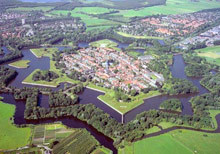

Actividades
Esta ciudad tiene un centro histórico en el que aún se mantienen los fosos que lo rodean. De sur a norte el Oudegracht y el Nieuwegracht. Es sin duda una de las ciudades más bellas de Holanda, no solo por los mencionados canales que conforman su centro histórico, también por sus edificios y monumentos, de hecho, Utrecht es después de Ámsterdam y Maastricht, la ciudad con mayor número de monumentos nacionales de todas la ciudades holandesas.

Destacan en Utrecht la Casa Rietveld Schröder, incluida en la lista de Patrimonio de la Humanidad de la UNESCO. La Domtoren, la torre de iglesia más alta de FJFJFJFJFHolanda. Su ayuntamiento, un edificio en estilo neoclásico construido entre 1826 y 1847 o el Oudaen, un castillo en pleno centro de la ciudad, construido en 1280 es uno de los símbolos de la riqueza económica en el pasado de la ciudad. En cuanto museos destacan el Museo de Arte Aborigen, el Museo Catharineconvent o el Museo Central de Utrecht, que ofrece una visión general a lo largo de 2.000 años de historia, pero también sobre la moda, el diseño y las artes visuales contemporáneas.
No solamente cabe resaltar los museos y historia, tambien dada su amplia comunidad joven, podemos ver su vida nocturna, entre las que resaltan los locales más interesantes puede encontrarse en el centro de la ciudad, junto a los canales o pequeñas callejuelas se encuentran algunos de los locales de moda entre los jóvenes de Utrecht y los alrededores. Resaltan Club
Basis y el Club
Monza.
Tambien podemos encontrar una gran actividad en parques naturales que se encuentran a sus alrededores, tambien sitios historicos ya mencionados y tambien una gran cantidad de eventos como teatro, conciertos y espectaculos de toda indole, que se pueden encontrar ampliamente en
tripadvisor.